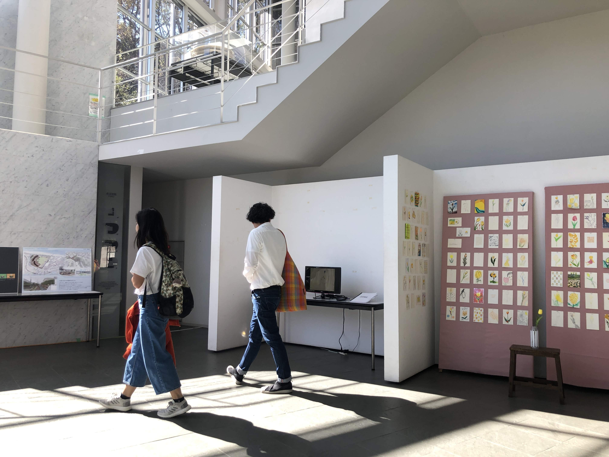
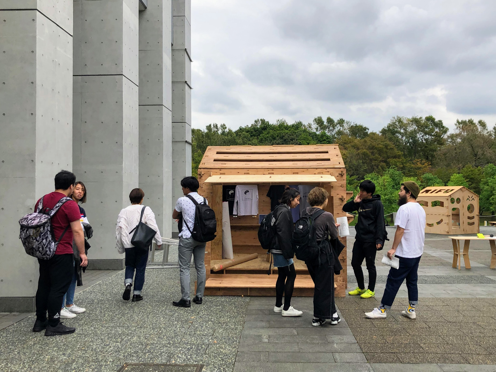

SFC Creative Week
慶應義塾大学SFCのキャンパス全域で学生の作品を展示するSFC Creative Weekが開催された。
SFCの30年の歴史の中で初めての試みとして学生主体の展示イベントは多方面の方々の協力を得ながら実現し、遠方にも関わらず多くの人に足を運んで頂いた。SFCに「みせる」文化を導入し、SFC外でも活躍するクリエイターに光をあてる最初の一歩を踏み出した。
-
- event,
- exhibition




Exhibitors
小林博人研究会 / SFC大学院アカデミックプロジェクト「モバイルメソッド」履修者 / 稲田玲奈、石川初 / 中島梨乃他 / 平田純哉 / 伊賀理心、太田百香 / 最上沙也子、大野雅貴 / hanasai（平田英子・斉友華）/ ウトゥ サマンタ / 新井理久、平田英子 / 高橋二稀 / シャフィラ アユ、 仲谷正史 / Smart Kiss / aimai_mania / SFC「studio C」履修者 / ひっこみじあんなフルーツ、もぎかほこ / ホシバナ（酒井瑛一、勝沼千秋）/ Poolside Project / SFC x-Music Night
Credits
プロジェクトマネージメント : 石井健
PR : 大野雅貴、小梶直
空間演出：佐野瑛美香、松橋百葉、坂田颯馬、古谷優樹
デザイン：大日方伸（メイングラフィック）、鈴木英佳（キャプション、フライヤー）
ウェブサイト制作：石井健
特別協力：慶應義塾大学湘南藤沢キャンパス、慶應義塾大学湘南藤沢メディアセンター
Special Thanks : 脇田玲、田中浩也、慶應義塾大学湘南藤沢事務室管財担当の皆様、and all the people involved in the event.
主催：SFC Creative Week 実行委員会